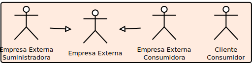
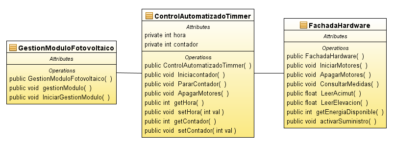
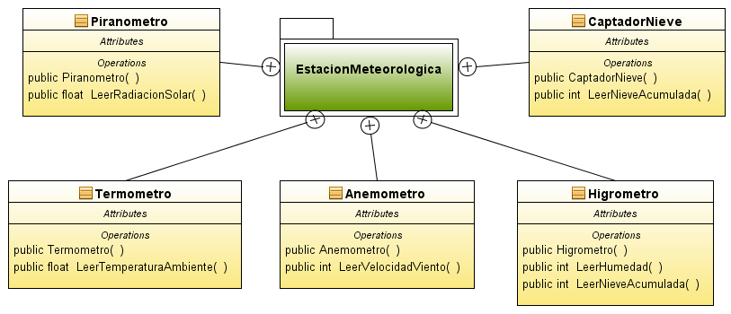

Gestión de una central solar fotovoltáica y servicios de distribución electrica
Metodologías de desarrollo. Lenguaje de modelado Unificado
Ignacio Baca Moreno-Torres
Manuel Valls Vorndran
Juan Manuel Rodríguez González
Diciembre 2011
Introducción y planteamiento del problema

Por: Manuel Valls Vorndran
Energia Solar Fotovoltaica
Actualmente se está produciendo una expansión en Sudamérica en la instalación de centrales solares
Los motivos por los que se están instalando centrales solares en el mundo es:
- Alta rentabilidad a la hora de invertir en este tipo de centrales
- Es una energía limpia y renovable
- Una de las soluciones para los problemas del cambio climático, ya que contribuimos eficazmente a la reducción de emisiones de CO2.
Obtención de Energía Solar
El sistema para obtener la energía solar es la siguiente:

Parámetros a tener en cuenta

Acimut: Acimut es el ángulo o longitud de arco sobre el horizonte celeste que forman el Norte y la proyección vertical del Sol sobre el horizonte del observador.
Elevación: La elevación es el ángulo al que hay que elevar el módulo sobre el suelo
Contenido de la presentación
El contenido de la presentación se ha dividido en los siguientes apartados
- Casos de uso
- Diagrama de secuencia del control automatizado de un módulo fotovoltaico
- Diagrama de secuencia de la compra/venta de energía a empresas
- Conclusiones
Diagrama de casos de uso
Por: Ignacio Baca Moreno-Torres
Identifiación inicial
En la primera iteración identificamos los actores
- Técnicos
- Hardware
- Suministrador/Consumidor
En la segunda iteración
- división de actores por rol
- casos de usos más especificos
Identifiación de agentes

Casos de uso - Hardware

Casos de uso - Técnicos


Casos de uso - Suministro y Consumo Externo


Diagrama final de casos de uso

Diagrama de secuencia "sincronizar módulo fotovoltáico"
Por: Manuel Valls Vorndran
Diagrama secuencia módulo fotovoltaico
Diagrama de clases módulo fotovoltaico I

Diagrama de clases módulo fotovoltaico II

Diagrama de clases módulo fotovoltaico III

Diagrama de secuencia "comprar lote energía"

Por: Juan Manuel Rodrígez González
Diagrama secuencia solicitar lote
Diagrama secuencia negociar precio
Diagrama secuencia suministrar
Diagrama de clases gestión energía

Conclusiones y dudas

Por: Juan Manuel Rodrígez González
Conclusiones
Elegir una herramienta adecuada es fundamental
netbeans en ocasiones lento e incluso inestablebouml conexión entre diagramas secuencia y clases peor definida
El modelo simplifica a la realidad y supone cosas que actualmente
no son admisibles
- Negociación automatizada Un mercado tan dinámico como el de
la energía requiere actualmente de la supervisión humana.
- La tecnología actual no permite un almacenamiento masivo a gran escala
a un coste viable para muchas empresas, pero de cara al futuro esto
podría hacerse realidad.
Dudas

Gracias!